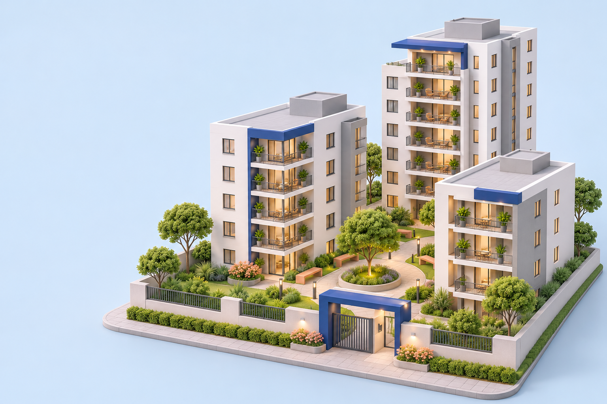

Viviendas y residentes
Registra cada vivienda y su contacto principal. Genera un enlace para solicitar datos actualizados.
Viviendas, paquetes, accesos y tareas, organizados en un mismo lugar. Menos vueltas. Más claridad para el día a día.

Una herramienta para cada parte de la administración, con campos claros y acciones directas. Empieza por tu copropiedad y construye tu registro a tu ritmo.
Registra cada vivienda y su contacto principal. Genera un enlace para solicitar datos actualizados.
Anota lo que llega, identifica la vivienda y deja constancia de la fecha de entrega.
Consulta las entradas registradas y completa la salida de cada visitante.
Registra valores en pesos colombianos y diferencia gastos pagados de pendientes.
Ordena tareas por fecha, proveedor y estado para dar seguimiento al trabajo.
Prepara una pregunta y sus opciones. Lleva un conteo manual de un voto por vivienda.
Sin configuraciones complicadas para empezar a trabajar. El panel te acompaña con estados vacíos y formularios concretos.
Abrir mi espacio de trabajoRegistra el nombre del conjunto y el contacto de quien lo administra.
Añade las unidades y solicita la actualización de sus contactos.
Lleva tus registros diarios y descarga una copia de seguridad al terminar.
La plataforma está pensada para conectar a quien habilita el servicio, a quien administra y a quien vive en el conjunto. El acceso con cuentas independientes requiere conectar la base de datos y la autenticación.
Valida las copropiedades y gestiona las licencias desde una cuenta con permisos específicos.
Gestiona únicamente su conjunto, sus viviendas y las actividades de la copropiedad.
Actualiza sus datos y participa desde su portal, con identidad y acceso verificados.
Esta entrega incluye la herramienta local y una guía de implementación para esa siguiente fase. Ver qué está disponible ahora.
Abre el panel, crea tu primer conjunto y recorre los módulos.